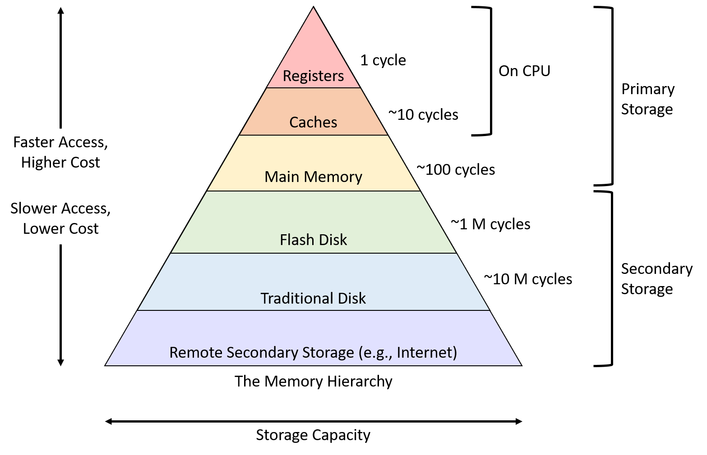
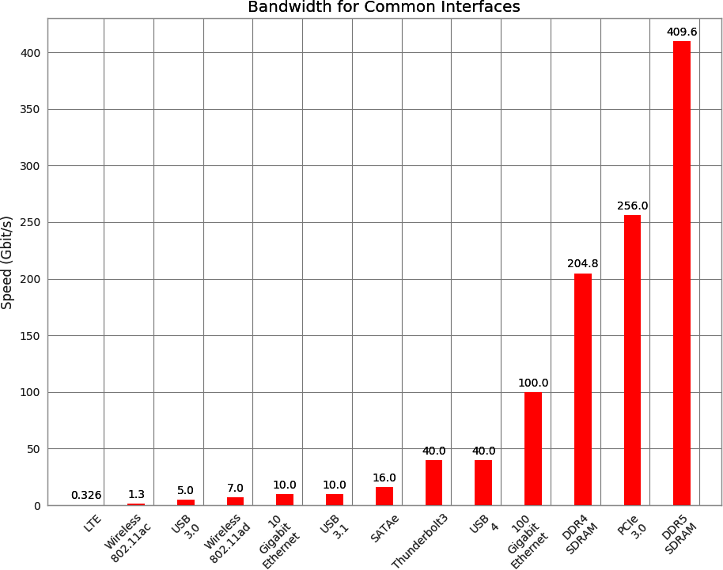
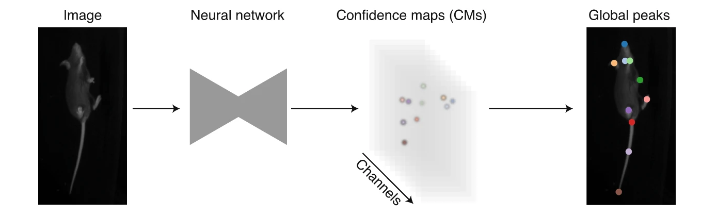
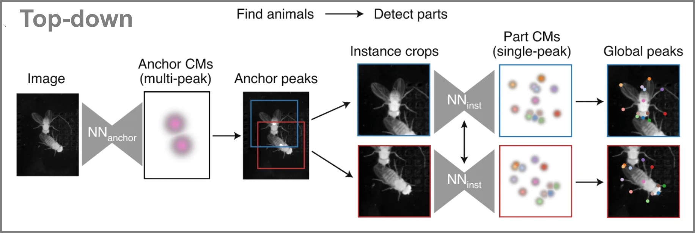
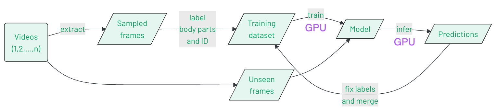
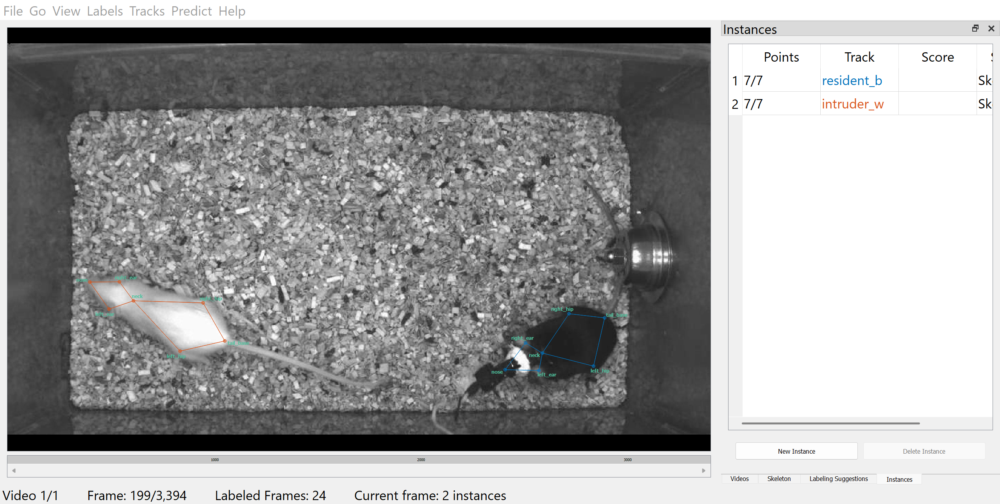
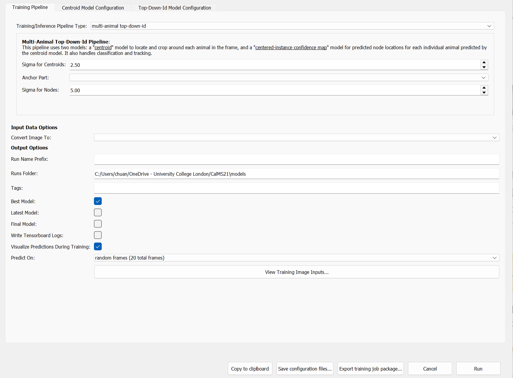
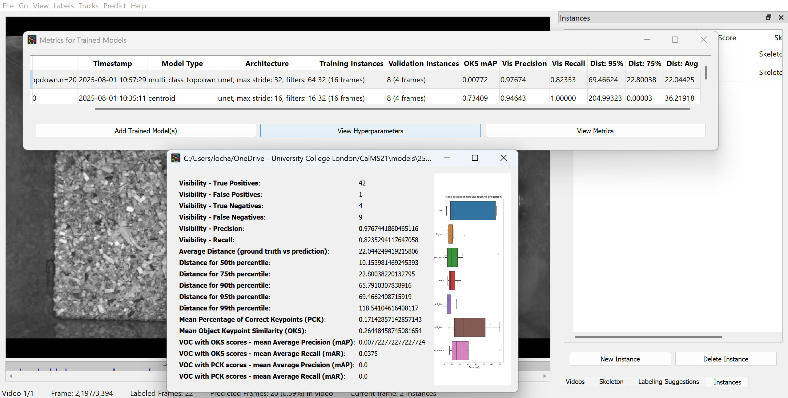

Running pose estimation on the SWC HPC system
Contents
- Hardware overview
- Basic Linux commands
- Introduction to High Performance Computing
- SWC HPC system
- Using the job scheduler
- Running pose estimation on the SWC HPC
Hardware overview
- CPU (Central Processing Unit)
- General-purpose
- Split into cores (typically between 4 and 64)
- Each core can run a separate process
- Typically higher clock speed than GPU (~3-5GHz)
- GPU (Graphics Processing Unit)
- Originally for rendering graphics
- Thousands of cores
- Optimised for parallel processing of matrix multiplication
- Typically lower clock speed than CPU (~1-2GHz)
Hardware overview
Primary storage:
- Cache
- Small, fast memory
- Stores frequently accessed data
- Sits directly on the CPU/GPU
- Typically in the MB range with multiple levels
- Main memory (RAM/VRAM)
- Fast storage for data
- CPU/GPU can access data quickly
- Lost when machine is powered off
- Typically 8-512 GB range
Hardware overview
Secondary storage:
- Drive storage (HDD/SSD)
- Much slower than RAM
- SSDs faster than HDDs
- Typically in the GB-TB range
- Network storage (e.g. ceph)
- Shared storage accessible from multiple machines
- Typically in the TB-PB range
- High latency compared to local storage
Hardware overview

Hardware overview

Performance considerations
- CPU
- Frequency is important for single-threaded tasks
- More cores can be better for parallel tasks
- Sometimes your local machine is faster than the HPC for CPU tasks
- GPU
- Great for parallel tasks (e.g. machine learning)
- Memory is important - make sure your data fits in VRAM
- Generation can be important, a new generation is typically ~10 – 20% faster
- Storage
- Best if you can keep data in primary memory (Cache/RAM)
- If data doesn’t fit in memory make sure it’s on fast storage (local)
cd: Navigate Directories
cd [directory]– Changes the current working directory to the specified directory.cd ..– Move up one directory level.cd /path/to/directory– Go to a specific path.cd ~orcd– Go to the home directory.cd /– Go to the root directory.
ls: List Directory Contents
ls– Lists files and directories in the current working directory.ls -l– Displays detailed information about each file (permissions, owner, size, etc.).ls -a– Shows all files, including hidden files (files starting with a dot).ls -h– Displays sizes in human-readable format (e.g., KB, MB).ls -lah– Combines the above options.
mkdir: Make Directory
mkdir [directory_name]– Creates a new directory with the specified name.mkdir -p /path/to/dirto create nested directories.
rmdir and rm: Remove Directories and Files
rm [file]– Removes a file.rmdir [directory]– Removes an empty directory.rm -r [directory]- Removes a directory and its contents recursively.rm -f [file]- Removes to force remove a file (no undo be careful!).
mv and cp: Move, Rename and Copy
cp [source] [destination]– Copies a file or directory to the destination.mv [source] [destination]– Moves a file or directory to the destination.mvcan also be used to rename a file or directory if the source and destination directories match.
Input and Output
echo [text]– Displays text or outputs text to a file.echo $ENV_VAR– Displays the value of an environment variable.touch [filename]– Creates an empty file or updates the timestamp of an existing file.>– Redirects output to a file.>>– Appends output to a file.
watch: Monitor Command Output
watch [command]– Repeatedly runs a command at intervals and displays the result.- Use
watch -n [seconds] [command]to change the interval.
man and help: Get Help
man [command]– Opens the manual page for a command.help [command]– Provides a short description of built-in commands.
|: Pipes!
Description:
|– Pipes the output of one command as input to another.- Useful for chaining commands together to perform complex operations.
Introduction to High Performance Computing (HPC)
- Lots of meanings
- Often just a system with many machines (nodes) linked together with some/all of:
- Lots of CPU cores per node
- Powerful GPUs
- Lots of memory per node
- Fast networking to link nodes
- Fast data storage
- Standardised software installation
Why?
- Run jobs too large for desktop workstations
- Run many jobs at once
- Efficiency (cheaper to have central machines running 24/7)
- In neuroscience, typically used for:
- Analysing large data (e.g. high memory requirements)
- Parallelising analysis/modelling (run on many machines at once)
SWC HPC hardware
(Correct at time of writing)
- Ubuntu 24.04
- 81 nodes
- 35 CPU nodes
- 31 GPU nodes
- ~4500 CPU cores
- 128 GPUs
- ~20TB RAM
Logging in
Log into bastion node (not necessary within SWC network)
This node is fine for light work, but no intensive analyses
More details
See our guide at howto.neuroinformatics.dev
File systems
/nfs/nhome/live/<USERNAME>or/nfs/ghome/live/<USERNAME>- “Home drive” (SWC/GCNU), also at
~/
- “Home drive” (SWC/GCNU), also at
/nfs/winstor/<group>- Old SWC research data storage/nfs/gatsbystor- GCNU data storage/ceph/<group>- Current research data storage/ceph/scratch- Not backed up, for short-term storage/ceph/apps- HPC applications
Note
You may only be able to “see” a drive if you navigate to it
Navigate to the scratch space
HPC software
All nodes have the same software installed
- Ubuntu 24.04 LTS
- General linux utilities
Modules
Preinstalled packages available for use, including:
- ANTs
- BrainGlobe
- CUDA
- DeepLabCut
- FSL
- Julia
- Kilosort
- mamba
- MATLAB
- neuron
- miniconda
- SLEAP
Using modules
List available modules
SLURM
- Simple Linux Utility for Resource Management
- Job scheduler
- Allocates jobs to nodes
- Queues jobs if nodes are busy
- Users must explicitly request resources
SLURM commands
View a summary of the available resources
atyson@hpc-gw2:~$ sinfo
PARTITION AVAIL TIMELIMIT NODES STATE NODELIST
cpu* up 10-00:00:0 10 drain~ enc1-node[2,4,6,8,10-12],enc2-node[4,7-8]
cpu* up 10-00:00:0 3 idle~ enc1-node[3,7],enc2-node10
cpu* up 10-00:00:0 5 down~ enc1-node[14,16],enc2-node[3,6,12]
cpu* up 10-00:00:0 3 drain enc3-node[6-8]
cpu* up 10-00:00:0 10 mix enc1-node[1,5,9,13],enc2-node[1-2,5],enc3-node[2,4-5]
cpu* up 10-00:00:0 3 alloc enc2-node[9,11,13]
cpu* up 10-00:00:0 1 idle enc3-node1
gpu up 10-00:00:0 1 drain* gpu-350-02
gpu up 10-00:00:0 1 drain gpu-350-03
gpu up 10-00:00:0 5 mix gpu-350-01,gpu-380-[10,12-13],gpu-sr670-20
gpu up 10-00:00:0 12 idle gpu-350-[04-05],gpu-380-[11,14-18],gpu-sr670-[21-23],gpu-sr675-31
a100 up 10-00:00:0 1 mix gpu-sr670-20
a100 up 10-00:00:0 3 idle gpu-sr670-[21-23]
gpu_lowp up 10-00:00:0 5 idle gpu-sr675-[31-34],gpu-xd670-30
gpu_branco up 30-00:00:0 3 idle gpu-sr675-[32-34]
gatsby_ws up 10-00:00:0 1 down* u236b
gatsby_ws up 10-00:00:0 4 idle adrian,u237h,u240c,u434a
View currently running jobs (from everyone)
atyson@hpc-gw2:~$ squeue
JOBID PARTITION NAME USER ST TIME NODES NODELIST(REASON)
4036257 cpu bash imansd R 13-01:10:01 1 enc1-node2
4050946 cpu zsh apezzott R 1-01:02:30 1 enc2-node11
3921466 cpu bash imansd R 51-03:05:29 1 gpu-380-13
4037613 gpu bash pierreg R 12-05:55:06 1 gpu-sr670-20
4051306 gpu ddpm-vae jheald R 15:49 1 gpu-350-01
4051294 gpu jupyter samoh R 1:40:59 1 gpu-sr670-22
4047787 gpu bash antonins R 4-18:59:43 1 gpu-sr670-21
4051063_7 gpu LRsem apezzott R 1-00:08:32 1 gpu-350-05
4051063_8 gpu LRsem apezzott R 1-00:08:32 1 gpu-380-10
4051305 gpu bash kjensen R 18:33 1 gpu-sr670-20
4051297 gpu bash slenzi R 1:15:39 1 gpu-350-01More details
See our guide at howto.neuroinformatics.dev
Partitions
Interactive job
Start an interactive job (bash -i) in the cpu partition (-p cpu) in pseudoterminal mode (--pty) with one CPU core (-n 1).
Always start a job (interactive or batch) before doing anything intensive to spare the gateway node.
Run some “analysis”
Clone a test script
Batch jobs
Check out batch script:
Run batch job:
Array jobs
Check out array script:
#!/bin/bash
#SBATCH -p cpu # partition (queue)
#SBATCH -N 1 # number of nodes
#SBATCH --mem 1G # memory pool for all cores
#SBATCH -n 1 # number of cores
#SBATCH -t 0-0:1 # time (D-HH:MM)
#SBATCH -o slurm_array_%A-%a.out
#SBATCH -e slurm_array_%A-%a.err
#SBATCH --array=0-9%4
# Array job runs 10 separate jobs, but not more than four at a time.
# This is flexible and the array ID ($SLURM_ARRAY_TASK_ID) can be used in any way.
echo "Multiplying $SLURM_ARRAY_TASK_ID by 10"
./multiply.sh $SLURM_ARRAY_TASK_ID 10 Run array job:
Using GPUs
Start an interactive job with one GPU:
Useful commands
Cancel a job
Example: pose estimation with SLEAP
Pose estimation

Pose estimation software
DeepLabCut: transfer learning
SLEAP:smaller networks

Top-down pose estimation

SLEAP workflow

Warning
This workshop uses SLEAP version 1.3.4 (TensorFlow backend), with documentation available at legacy.sleap.ai.
HPC modules for SLEAP ≥ 1.5.0 (PyTorch backend) will be added in future.
Sample data
/ceph/scratch/neuroinformatics-dropoff/SLEAP_HPC_test_data/CalMS21
- Contains an example video from the Caltech Mouse Social Interactions (CalMS21) Dataset (Sun et al. 2021).
- SLEAP project, made by Chang Huan Lo, with labeled frames, trained models and prediction results.
More details
See animals-in-motion.neuroinformatics.dev/latest/prerequisites for more information about the data.
Labeling data locally

Exporting a training job package

Training job package contents
Copy the unzipped training package to your scratch space and inspect its contents:
What’s in the SLEAP scripts?
Training
Get SLURM to run the script
Suitable for debugging (immediate feedback)
Start an interactive job with one GPU
Execute commands one-by-one, e.g.:
See example batch scripts
Batch script for training
sleap_train_slurm.sh
#!/bin/bash
#SBATCH -J slp_train # job name
#SBATCH -p gpu # partition (queue)
#SBATCH -N 1 # number of nodes
#SBATCH --mem 16G # memory pool for all cores
#SBATCH -n 4 # number of cores
#SBATCH -t 0-06:00 # time (D-HH:MM)
#SBATCH --gres gpu:1 # request 1 GPU (of any kind)
#SBATCH -o slurm.%x.%N.%j.out # STDOUT
#SBATCH -e slurm.%x.%N.%j.err # STDERR
#SBATCH --mail-type=ALL
#SBATCH --mail-user=user@domain.com
# print GPU info
nvidia-smi
# Load the SLEAP module
module load SLEAP
# Define the directory of the exported training job package
SLP_JOB_NAME=mouse044_task1_annotator1.training_job
SLP_JOB_DIR=/ceph/scratch/$USER/$SLP_JOB_NAME
# Go to the job directory
cd $SLP_JOB_DIR
# Run the training script generated by SLEAP
./train-script.shMonitoring the training job
View the status of your queued/running jobs with squeue --me
View status of running/completed jobs with sacct:
Run sacct with some more helpful arguments, e.g. view jobs from the last 24 hours, incl. time elapsed and peak memory usage in KB (MaxRSS):
View trained models
While you wait for the training job to finish, you can copy and inspect the trained models from a previous run:
cd /ceph/scratch/neuroinformatics-dropoff/SLEAP_HPC_test_data/CalMS21/better_model
cp -R 250806_174722.centroid.n=679 /ceph/scratch/$USER/mouse044_task1_annotator1.training_job/models/
cp -R 250807_162146.multi_class_topdown.n=679 /ceph/scratch/$USER/mouse044_task1_annotator1.training_job/models/
cd /ceph/scratch/$USER/mouse044_task1_annotator1.training_job/models
ls -1Evaluate trained models

SLEAP workflow
Batch script for inference
sleap_infer_slurm.sh
#!/bin/bash
#SBATCH -J slp_infer # job name
#SBATCH -p gpu # partition
#SBATCH -N 1 # number of nodes
#SBATCH --mem 32G # memory pool for all cores
#SBATCH -n 8 # number of cores
#SBATCH -t 0-01:00 # time (D-HH:MM)
#SBATCH --gres gpu:1 # request 1 GPU
#SBATCH -o slurm.%x.%N.%j.out # write STDOUT
#SBATCH -e slurm.%x.%N.%j.err # write STDERR
#SBATCH --mail-type=ALL
#SBATCH --mail-user=user@domain.com
# print GPU info
nvidia-smi
# Load the SLEAP module
module load SLEAP
# Define directories for exported SLEAP job package and videos
SLP_JOB_NAME=mouse044_task1_annotator1.training_job
SLP_JOB_DIR=/ceph/scratch/$USER/$SLP_JOB_NAME
VIDEO_DIR=/ceph/scratch/neuroinformatics-dropoff/SLEAP_HPC_test_data/CalMS21
VIDEO_PREFIX=mouse044_task1_annotator1
# Go to the job directory
cd $SLP_JOB_DIR
# Make a directory to store the predictions
mkdir -p predictions
# Run the inference command
sleap-track $VIDEO_DIR/${VIDEO_PREFIX}.mp4 \
-m $SLP_JOB_DIR/models/250806_174722.centroid.n=679/training_config.json \
-m $SLP_JOB_DIR/models/250807_162146.multi_class_topdown.n=679/training_config.json \
-o predictions/${VIDEO_PREFIX}_predictions.slp \
--gpu auto \
--no-empty-frames \
--batch_size 1Run inference job
- Edit and save the batch script
- Submit the job
- Monitor the job
Run inference as an array job

Batch script for array job
sleap_infer_array_slurm.sh
#!/bin/bash
#SBATCH -J slp_infer # job name
#SBATCH -p gpu # partition
#SBATCH -N 1 # number of nodes
#SBATCH --mem 32G # memory pool for all cores
#SBATCH -n 8 # number of cores
#SBATCH -t 0-01:00 # time (D-HH:MM)
#SBATCH --gres gpu:1 # request 1 GPU
#SBATCH -o slurm.%x.%N.%j.out # write STDOUT
#SBATCH -e slurm.%x.%N.%j.err # write STDERR
#SBATCH --mail-type=ALL
#SBATCH --mail-user=user@domain.com
#SBATCH --array=0-2
# print GPU info
nvidia-smi
# Load the SLEAP module
module load SLEAP
# Define directories for exported SLEAP job package and videos
SLP_JOB_NAME=mouse044_task1_annotator1.training_job
SLP_JOB_DIR=/ceph/scratch/$USER/$SLP_JOB_NAME
VIDEO_DIR=/ceph/scratch/neuroinformatics-dropoff/SLEAP_HPC_test_data/CalMS21
VIDEOS_PREFIXES=(mouse044_task1_annotator1 mouse045_task1_annotator1 mouse046_task1_annotator1)
CURRENT_VIDEO_PREFIX=${VIDEOS_PREFIXES[$SLURM_ARRAY_TASK_ID]}
echo "Current video prefix: $CURRENT_VIDEO_PREFIX"
# Go to the job directory
cd $SLP_JOB_DIR
# Make a directory to store the predictions
mkdir -p predictions
# Run the inference command
sleap-track $VIDEO_DIR/${CURRENT_VIDEO_PREFIX}.mp4 \
-m $SLP_JOB_DIR/models/250806_174722.centroid.n=679/training_config.json \
-m $SLP_JOB_DIR/models/250807_162146.multi_class_topdown.n=679/training_config.json \
-o predictions/${CURRENT_VIDEO_PREFIX}_array_predictions.slp \
--gpu auto \
--no-empty-frames \
--batch_size 1Further reading

SWC | 2025-10-09